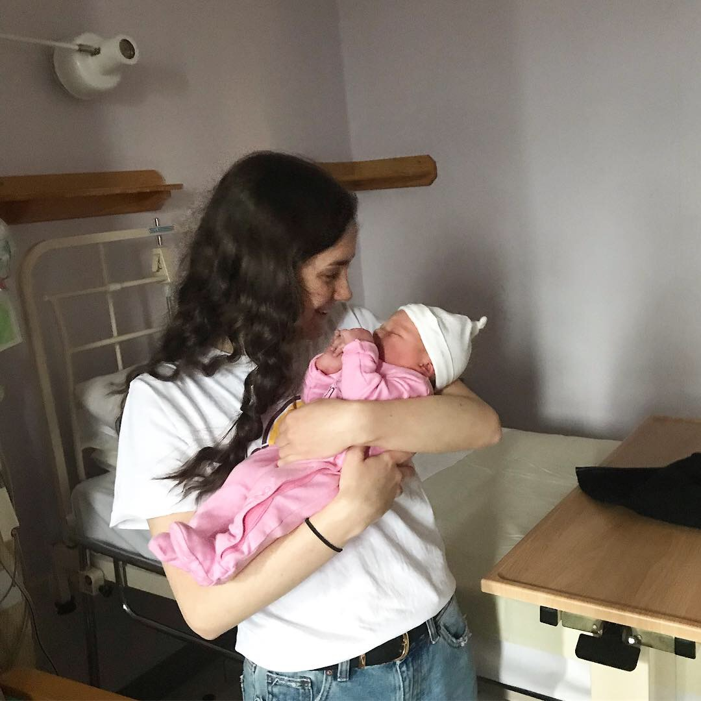
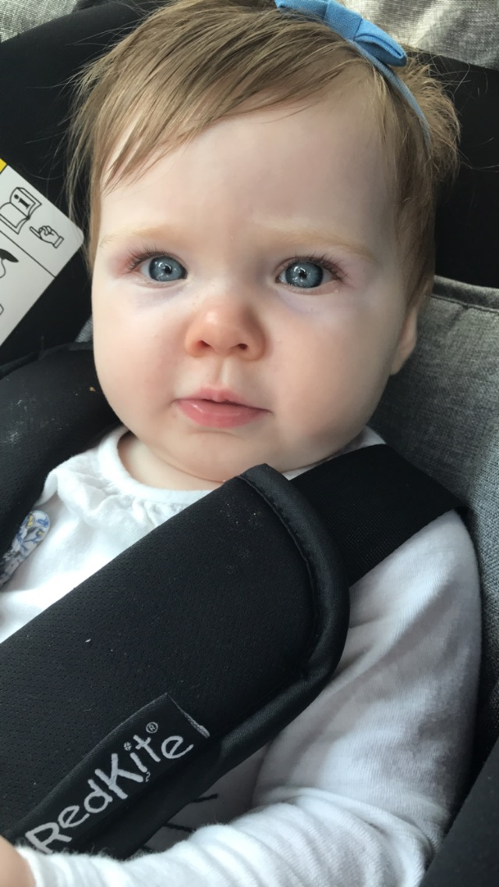
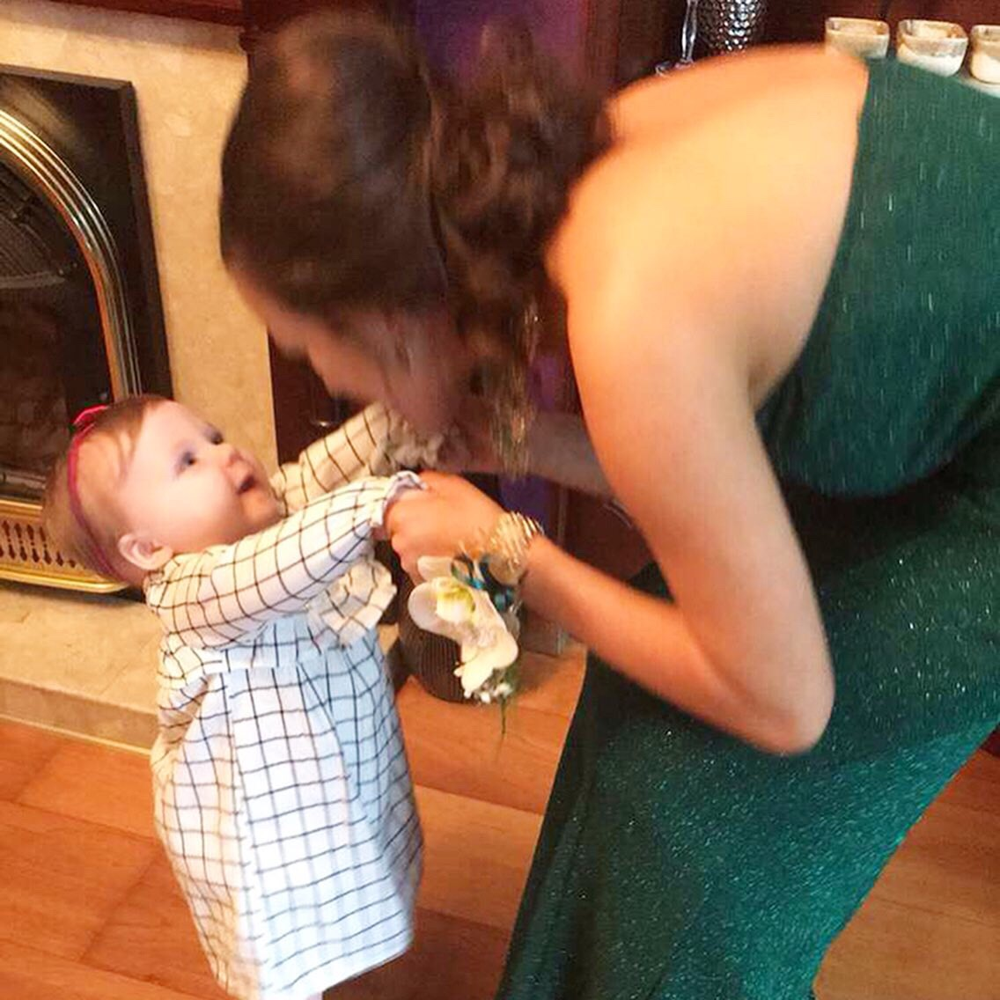
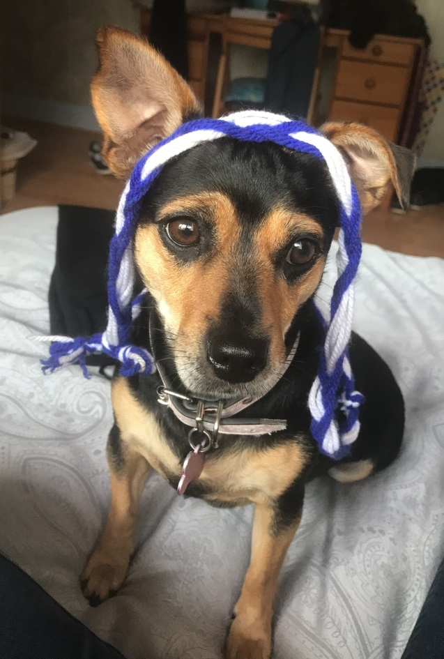
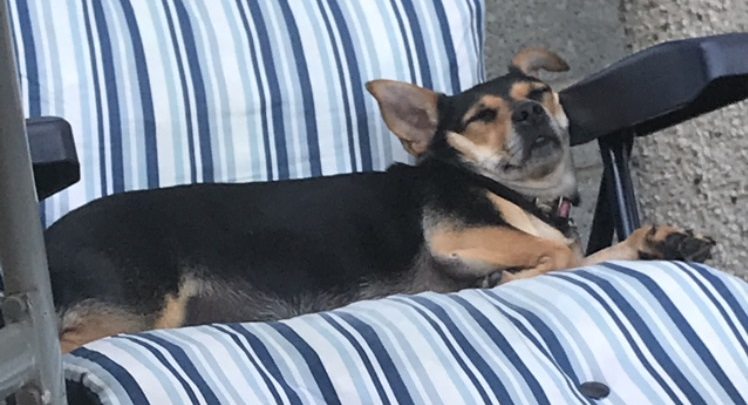

Hello! Welcome to my website. My name's Becky - Feel free to browse around and get to know me better!
| Navigation | |
|---|---|
| Home | My Hobbies |
| Family | My LinkedIn |
| References | |
Family is really important to me. At home, there's only my Mam, Dad, and I at the moment. I get along really well with both of my parents. I tell my Mam everything - she's some character! And my Dad's a big softy.
I have one older sister, and I mean older - she's 30 years old, married, and has been moved out for a few years now. I get along with her so well - I think because of the age gap, honestly. She lives in her own house with her husband and new little baby.
Which brings me onto this special mention - my lovely little niece and goddaughter Ava!
  
Ava was born on 2nd January 2019, making her nearly 10 months old. She's the star of our family at the moment and she's just adorable! She's crawling at the speed of light; babbling words like "Mama" and "Baba"; and standing by herself. She's not far from walking I'd say!
My next honourable mention (and Ava's best friend at the moment) is my favourite furry companion Pepper.
 
Pepper (AKA Pepsi or Peps or Pepperoni!) is a very important member of our household! We rescued her in 2015 from the WSPCA after poor Pepsi had been through a number of rough homes :( Because she's a rescue dog, we're not 100% sure what breed she is or how old she is but the vet guesses shes some sort of Jack Russell/Chihuahua mix and that she's about 6 years old now! Despite what Pepper's been through, she's an absolute sweetheart and she's treated like a queen in our house!
And that's my family. TLDR; I have one sister and I love my dog and my niece.